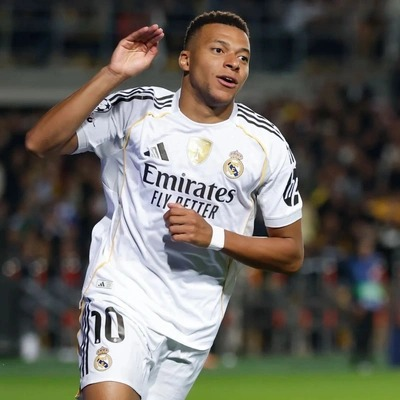
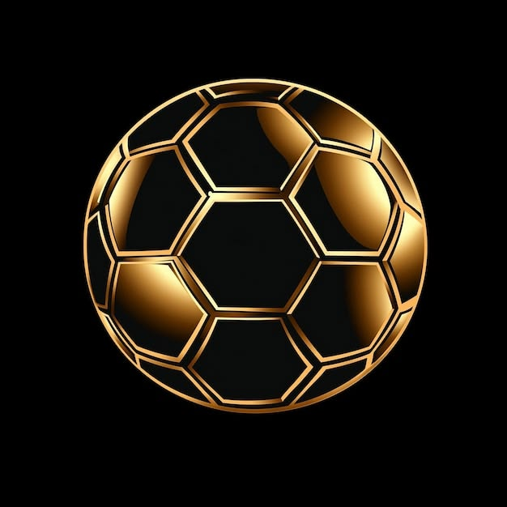
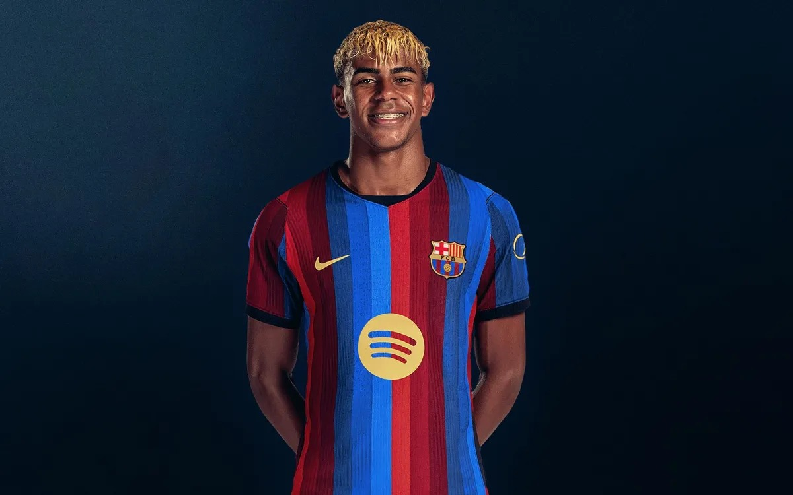
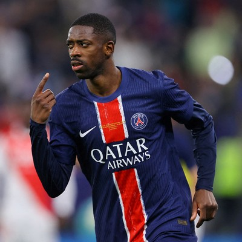
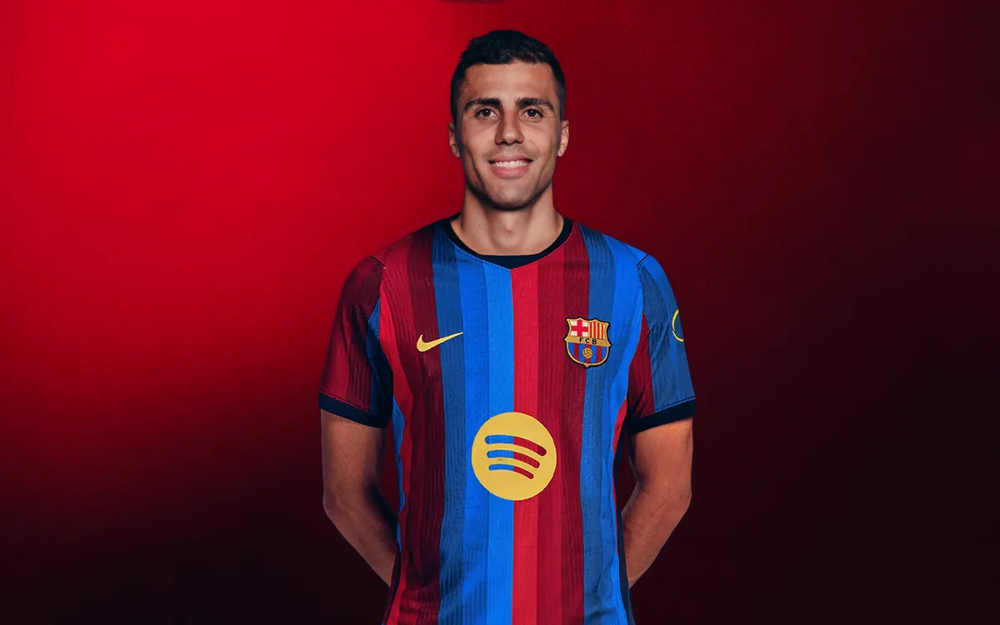

Kylian Mbappé
Real Madrid
Francia

Los candidatos al mejor futbolista del mundo.
Conoce a los candidatos de la temporada 2025-2026 y revisa sus estadísticas.
Ver candidatosLa ceremonia se realizará el 26 de octubre de 2026.
Selecciona el botón de cada tarjeta para ver sus estadísticas.

Real Madrid
Francia

FC Barcelona
España
Bayern Múnich
Inglaterra

Paris Saint-Germain
Francia
Bayern Múnich
Francia

Barcelona
España
El premio lo entrega la revista France Football desde 1956.
El primer ganador fue el inglés Stanley Matthews.
Por primera vez la gala no se celebra en París.
Fecha en la que se anunciará al ganador.
Periodistas de los 100 primeros países del ranking FIFA.
Elige a tu favorito y selecciona el botón para votar.
Real Madrid · Francia
FC Barcelona · España
Bayern Múnich · Inglaterra
Paris Saint-Germain · Francia
Bayern Munich · Alemania
Barcelona · España